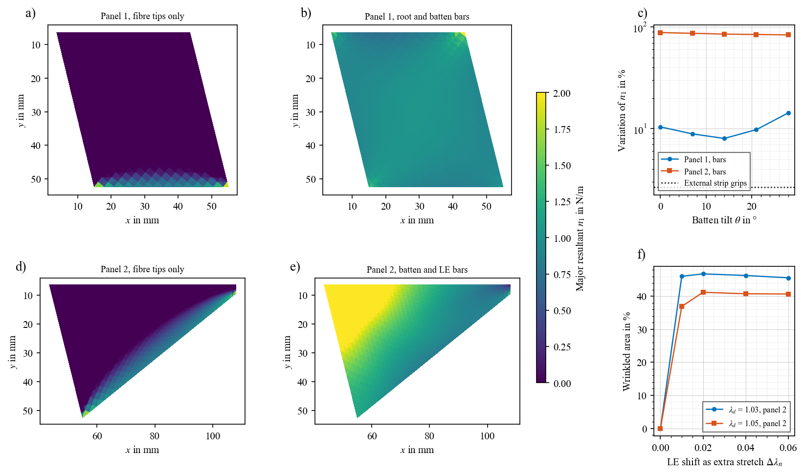
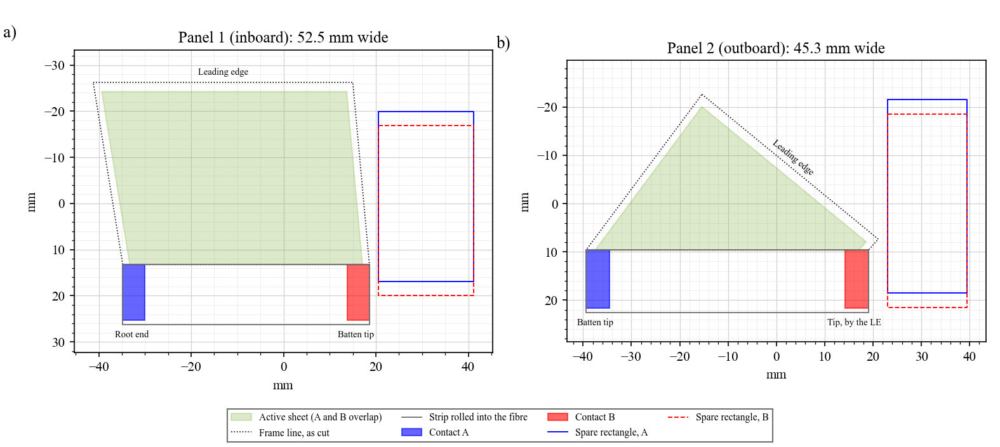
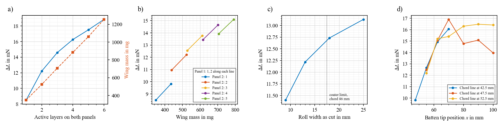
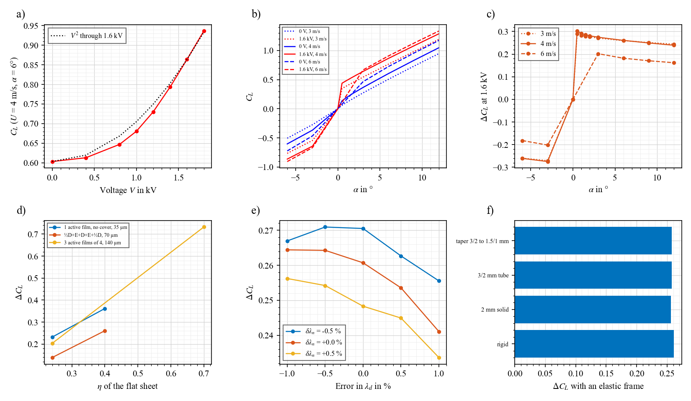
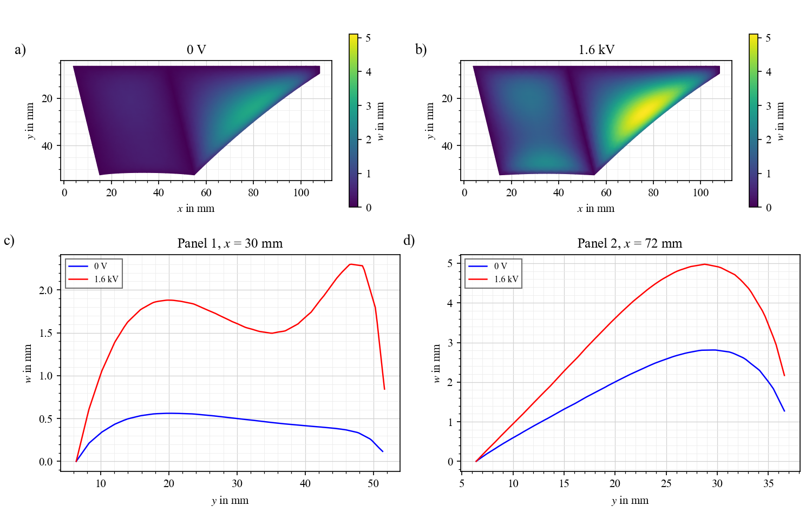
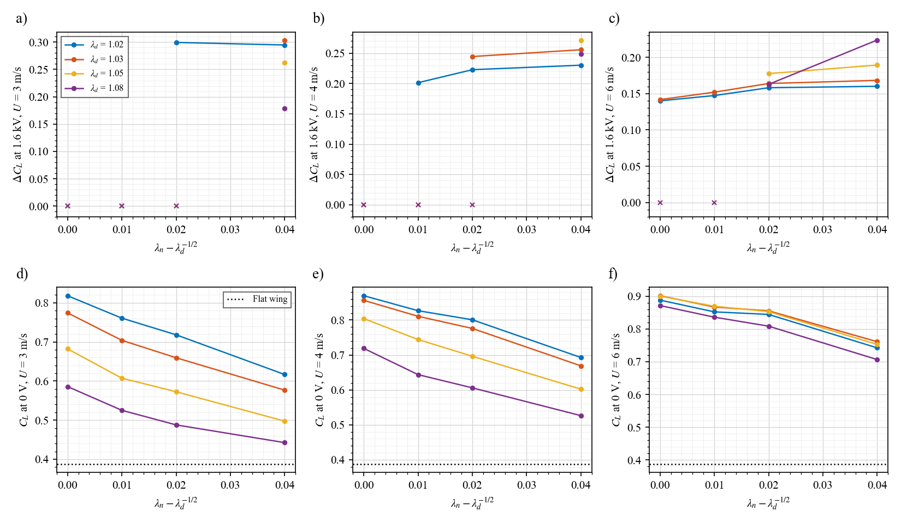
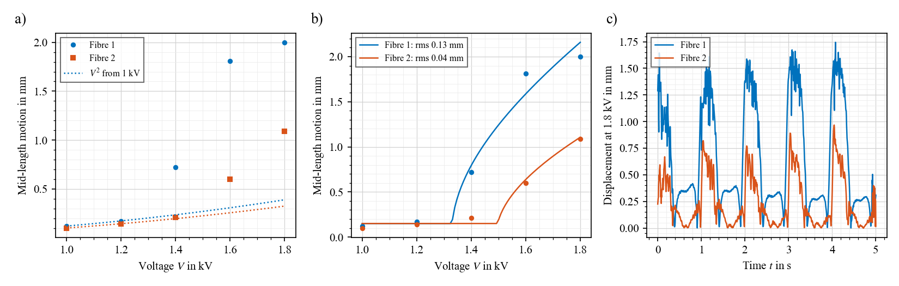
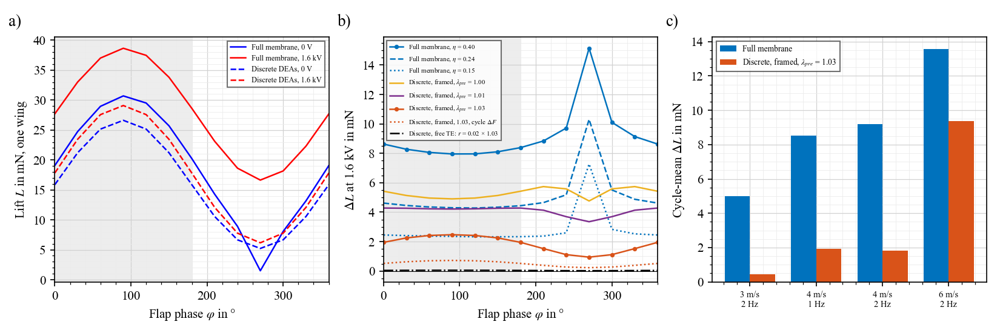
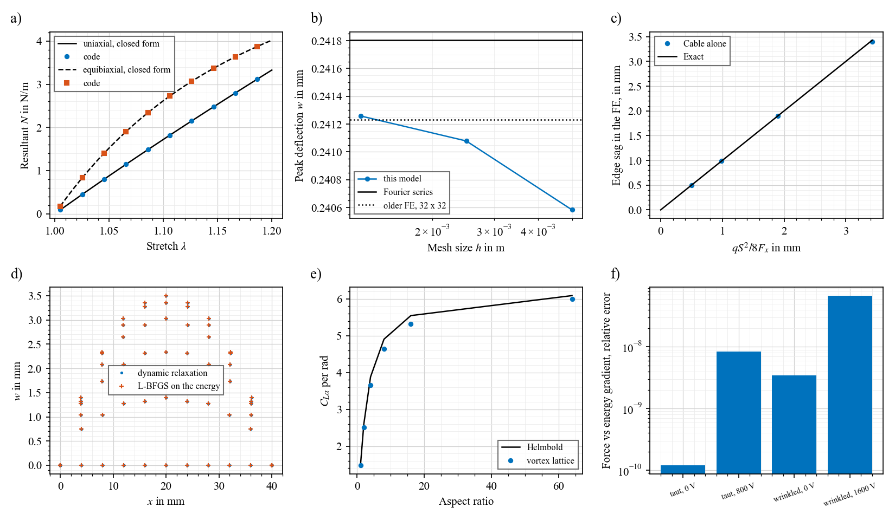

Active membrane wings / Full membrane
Full active membrane wing
The whole wing skin is the actuator. Nothing here has been built or measured: every number is a model prediction, and it depends on an efficiency $\eta$ not yet measured on a flat sheet.
In short
- The design is on its own page, with masks, equations, tolerances and bench checks. This page holds the earlier studies behind it.
- No pre-stretch before rolling or before the LE. Cut the sheet tilted, roll it flat, bond it to the LE. Pulling the root edge and batten to vertical then stretches the fibres by about 5 %.
- Tilt the root edge more than the batten. With equal tilts the batten does not balance, and the sheet wrinkles 80–95 %. At $\theta_r\approx1.67\,\theta_b$ with this roll, one line brings both to vertical.
- The active fibre works with a wide roll and a narrow band. It stays taut at 1.6 kV. It adds no lift: 14.5 mN against 15.7 mN for a passive fibre on the same outline.
- A chord stretch of 5 % keeps the state clean. Panel 1 is 46 % wrinkled at 0 V.
Tensioning by rotation
Finite elements, one wing, 4 m/s, 6°, 1.6 kV, passive fibre, batten at $x$ = 60 mm, $\lambda_n$ = 1.04, both edges held vertical. An asterisk marks a case with no converged state at 0 V or at voltage: read it as indicative only.
| $\theta_b$, $\theta_r$ | Layers | $\eta$ | $C_L$ | $\Delta L$ |
|---|---|---|---|---|
| 4°, 7.08° | 2 | 0.5 | 0.68 → 1.17 | 15.3 mN |
| 5°, 8.85° | 2 | 0.5 | 0.70 → 1.19 | 15.9 mN |
| 5°, 8.85° | 1 | 0.5 | 0.87 → 1.20 | 10.6 mN |
| 5°, 8.85° | 2 | 0.4 | 0.70 → 1.08 | 12.3 mN |
| 6°, 10.62° | 1 | 0.5 | 0.73 → 1.02 | 9.4 mN |
| 7°, 12.39° | 2 | 0.5 | 0.59 → 0.86 | 8.7 mN |
| 10°, 18°, active fibre | 2 | 0.4 | 0.52 → 0.63 | 3.4 mN |
| 10°, 18°, passive fibre | 2 | 0.4 | 0.52 → 0.66 | 4.3 mN |
| 14°, 25° | 2 | 0.4 | 0.50 → 0.58 | 2.6 mN |
| Change from the design (5°, 8.85°, 2 layers, $\eta$ = 0.5) | $\Delta L$ |
|---|---|
| Flow speed 3, 4, 6 m/s | 6.0, 15.9, 26.3 mN (1 layer: 5.4, 10.6, 17.9 mN) |
| $\eta$ = 0.15, 0.4, 0.5, 0.7 | 3.8, 12.3, 15.9, 23.3 mN |
| Batten at $x$ = 50, 60, 70 mm | 8.1, 15.9, 13.7* mN |
| Chord stretch $\lambda_n$ = 1.00, 1.02, 1.04, 1.06 | 16.9*, 16.5*, 15.9, 14.3 mN. Panel 1 wrinkled at 0 V: 88, 76, 64, 42 % |
| Rotation stopped short or overshot: 70, 85, 100, 115 % of the way | 14.9 mN, 15.2 mN*, 15.9 mN, 11.8 mN*. Panel 1 wrinkled at 0 V: 41, 53, 64, 67 % |
| Mesh 3, 2, 1.5 mm | 13.3, 15.9, 15.5* mN |
| Free root edge, held only at the fibre's root end | 16.6* mN (1 layer: 11.1* mN), about the same as with a rod, but the 0 V state does not settle. Start with a rod |

Prediction. a) Moment on the batten about its LE hinge with both edges vertical, no flow, one active layer. Zero is where the batten stays vertical by itself. b) Stretch of fibre 1. c) The simple model against the finite elements; it was tuned on these points (details).
- Equation: step 3b for the stretch and step 6 for the lift. The fibre limit is step 8.
- Trend: more tilt means a stiffer sheet and less for voltage to do. Below about 4° the gain stops. A rotation stopped short costs little; an overshoot costs more.
- Validate: build at 5°, release the batten and see whether it stops at vertical. Then measure fibre stretch with markers, resonance with voltage, and lift at 3–5 m/s.
Passive or active fibre?
| Passive fibre | Active fibre, 5 mm band | |
|---|---|---|
| Lift change, the design's outline, finite elements | 15.7 mN | 14.5 mN |
| Fibre force at 0 V → 1.6 kV, panel 1, 2 | 24, 23 → 25, 24 mN | 24, 23 → 15, 14 mN |
| Fabrication | Same roll, no glue line. Electrodes reach only the end tabs | Same roll. Electrodes also overlap over the 5 mm band |
| Masks | passive_fibre.svg | active_fibre.svg |


Same outline for both. An earlier active design, 80 % of a 13 mm strip at 10° and 18°, gave only 3.4 mN: its band took too much force, so it needed more tilt, and tilt is what costs the lift.
How to build it
Full details, with schematics and checks at each stage, are on the manufacturing page.
- Make the sheet flat, on the tilted masks. The active area stops at the fibre line.
- Roll the strip while the sheet is flat and unstretched. Each end of the fibre is one contact. No gluing: the fibre is part of the sheet, and this also avoids extra connections.
- Bond the sheet to the LE as cut. The root edge and batten are light rods, hinged at the LE, and sit at their tilts as cut: 7.5° and 4.5°. The LE goes on the crank mechanism.
- Set the small chord stretch. The mask's chord is 5 % short, so draw each fibre about 2 mm aft onto the rod tips. This happens after rolling and after the LE.
- Pull the root edge to vertical with an adjustable line from its tip to the body, about 81 mN for two layers, 54 mN for one. The batten should follow to vertical by itself. Fibres go to about 4.5 % stretch and bow in by about 2.6 mm on panel 1, 0.7 mm on panel 2.
The model starts from the end state, with the rods rigid and vertical and the chord stretch already in place. The order of these steps, friction in the hinges and the line over a flap cycle are not simulated. The batten was balanced with no flow; in flow it was held vertical, so if it drifts, lock it once vertical. Root rod load: about 136 mN for two layers, of which about 81 mN is compression along the rod.
Earlier tensioning options, for a sheet stretched before bonding
Superseded by rotation for this wing, but they explain why rods on the edges and uniform tension matter.
| Method | Result in the model | Verdict |
|---|---|---|
| Pull fibre tips only | 70–86 % of the sheet slack | No |
| Rigid bars on root and batten, panel 1 | Tension varies by 8 % at 14° tilt | Yes |
| Rigid bars on batten and LE, panel 2 | Varies by about 85 % at every tilt | No |
| Grips outside the panel, then bond | Varies by 2.6 % | Yes, both panels |
| Move the LE after bonding, for chord tension | Panel 2 is 37–47 % wrinkled | No |
| Flat sheet, line only (aft at the fibre junction) | 57–71 % of panel 2 wrinkled; $\Delta C_L$ 0.14–0.20 | Weak |
| Pre-stretched sheet with batten | $\Delta C_L$ 0.26; $C_L$ 0.60 → 0.86 | Yes |
| Pre-stretched sheet, no batten, junction held at a fixed point 0–2 mm aft | $\Delta C_L$ 0.27–0.29; line 26–48 mN. Only if pulled straight aft | Hard to anchor |
| Same, with the line anchored on the stroke axis | No converged state: it pulls inboard and fibre 1 goes nearly slack | No |
Rows above use 4 m/s, 6°, $\eta$ = 0.4, one active layer, a rigid frame and a line of fixed length. The flat-sheet line row is a coarser scoping run (2.5 mm mesh). The line was not run over a flap cycle. Data: tension.json, line_study.json, line_check.json.
LE on the crank, trailing edge to the body, earlier stretched design
| Layout, two active layers, 4 m/s, 6°, 1.6 kV, earlier shape | $C_L$ | $\Delta L$ |
|---|---|---|
| Batten and rigid root rib | 0.53 → 0.91 | 12.2 mN |
| Batten, free root edge, DEA fibre on the fibre's root end, 60 mN | 0.61 → 0.99 | 12.3 mN |
| Batten, free root edge, line (with a soft spring) on the fibre's root end, 60 mN | 0.67 → 0.97 | 9.6 mN |
| Same, 30 mN | 0.68 → 0.94 | 8.6 mN |
The root end of the fibre sits near the stroke axis, so the tensioner's length changes little over a stroke. The spare rectangles can be rolled into the DEA fibre. The 30 mN DEA fibre and the no-batten layouts did not converge. A soft spring in series makes a stiff fishing line much less sensitive to position; 50 N/m is modelled.
Design values
| Quantity | Value | Source |
|---|---|---|
| Active layers | 2 on each panel (1 if weight is critical) | Design study |
| Batten tip, chord line | $x$ = 60 mm, $y$ = 47.5 mm (chord 41 mm), area 32.7 cm², mass about 520 mg | Rotation |
| Tilt as cut, batten and root edge | 5°, 8.85°. Active fibre: 10°, 18° | Rotation |
| Stretch along the fibre, $\lambda_d$ | None when cut or rolled. From rotation: 1.05, 1.05 | step 3b |
| Stretch across the fibre, $\lambda_n$ | 1.04, set by drawing the fibre onto the rod tips | Rotation |
| Strip to roll, as cut, $w_s$ | 13 mm | Coater limit |
| Film stack | ½D + E + D + E + ½D (D dielectric, E electrode), $H$ = 35 µm, $H_m$ = 70 µm, $\chi$ = 0.5 | Your stack; $H$ not measured |
| Material | Elastosil P7670, $C_1$ = 42.8 kPa, $C_2$ = 447 Pa, $\varepsilon_r$ = 2.8 | Bundle fit; $\varepsilon_r$ assumed |
| $\eta$ of the flat sheet | 0.5 | Estimated: no rolled air gaps. Studies below used 0.4 |
| Fibre bow at 0 V, no flow | 2.6 mm, panel 1; 0.5 mm, panel 2 | tilt_fine.json |
| LE rod | ≥ 2 mm solid or a 3/2 mm tube: $\Delta C_L$ within 2 % of rigid. 1 mm solid: no steady state | final.json |
Film stack. Lying flat, only the middle dielectric is active, so half the thickness is passive ($\chi$ = 0.5). Rolled, the two half-layers meet between turns and form a second active film. The stack is symmetric, so it should not curl under voltage, and the electrodes are covered on both sides. A thicker stack with three active films of four gives more lift change, $\Delta C_L$ ≈ 0.42 at $\eta$ = 0.4 (not fully converged).
Tension maps for the tested methods

Prediction. a, d) Fibre tips only: tension stays in a band beside the fibre. b) Panel 1 with rigid bars: nearly uniform. e) Panel 2 with rigid bars: strings near the batten root are very short, so they overload. c) Variation (SD/mean) of $n_1$ against batten tilt; dotted, a 60 × 114 mm strip gripped at its short ends, at least 20 mm from the grips. f) Wrinkled area of panel 2 if the LE is moved after bonding the other edges.
- Equation: Eqs. F1–F6, in-plane.
- Trend: Tips-only leaves the sheet slack, bars suit the parallelogram but not the triangle, and external grips are uniform.
- Validate: Printed markers on the stretched sheet, then wrinkle photos at 0 V.
Masks
The outline as cut is the tilted sheet: unstretched along the fibre, with a 5 % shorter chord. Contacts sit at opposite ends of the fibre. Download: active fibre, 5 mm band in a 20 mm strip (shown; numbers), or passive fibre, same outline (numbers). Same masks for two or three layers.

Outlines as cut, LE towards the top, with each panel rotated so its fibre is horizontal. Active sheet 1933 and 853 mm². Fibres 54.0 mm as cut and 56.2 mm vertical; 58.7 and 61.2 mm. Spare rectangles: 36.9 × 20.6 and 40 × 16.3 mm, with A and B offset by 3 mm along their length, to use electrode area and as possible DEA tensioners.
- Equation: step 3b gives the tilt; the chord as cut is the frame chord over $\lambda_n$.
- Trend: More tilt means a shorter fibre as cut: 54.0 mm at 4.5°, 50.1 mm at 10°.
- Validate: Bring the edges to vertical and compare marker positions with the frame line.
Wiring. Tie panel 1's contact B and panel 2's contact A at the fibre junction, as a common connection running down the trailing edge. Panel 2's contact B then sits next to the LE and can run inside it, and panel 1's contact A sits at the root. Each panel keeps its own drive, so they can be switched separately: on the earlier shape, panel 1 alone gives $\Delta C_L$ = 0.16, panel 2 alone 0.10, both 0.26.
Design study: layers, panels, roll, shape

Prediction at 4 m/s, 6°, 1.6 kV, $\eta$ = 0.4, rigid frame, converged cases only. a) Same layers on both panels, with the best stretch for each. b) Different layers per panel. c) Roll width, two layers. d) Batten tip position, two layers.
- Equation: Eqs. F1–F9, $\Delta L=q\,S\,\Delta C_L$.
- Trend: More layers help with diminishing returns; roll width hardly matters; moving the batten outboard helps up to about 70 mm. Passive fibre, $\eta$ = 0.4.
- Validate: Two batten positions and one and two layers, in a static tunnel test, before any flapping.
| Question | Answer |
|---|---|
| How many active layers? | Two is the practical choice: 8.5, 12.2, 14.6, 16.3, 17.5, 18.8 mN for 1 to 6 layers, at 349, 524, 707, 884, 1061, 1255 mg. Lift per mass is flat at 1–2 and falls after that. With three or more on panel 1, states stop converging at this stretch. |
| Different layers per panel? | Possible, with a small gain. (1,2) gives 10.9 mN at 438 mg, against (2,1) 9.8 mN at 434 mg. Per mass, layers are better outboard. Per unit of flapping inertia, inboard is about 8 % better. |
| Roll width? | Little effect: 11.4, 12.2, 12.7, 13.1 mN at 9, 13, 18, 25 mm. Sag stays near 1 mm. At 3 and 6 mm, states do not converge. Use 9–13 mm. |
| Panel shape? | The batten position matters most. Moving its tip from $x$ = 40 to 70 mm raises $\Delta L$ from about 7 to 17 mN with about 20 % more area, so lift change per area doubles. Beyond 70 mm it levels off or falls. The cause is not established. A chord line at 47.5 mm is best at $x$ = 70 mm. Tilt changes it by under 10 %. This trend is not explained by the analytical model. |
| Speed? | At the best shape: 9.0, 16.9, 25.4 mN at 3, 4, 6 m/s with two layers; 7.0, 11.0, 15.6 mN with one. Same best shape in each case. |
| $\eta$? | At the earlier shape, two layers: 2.8, 6.0, 12.2, 20.3 mN at $\eta$ = 0.15, 0.24, 0.40, 0.70. |
Lift change at a fixed 6° stands in for the cycle mean; they agree within 10 % on the earlier design. The flap-cycle runs below use that earlier design, with one active layer. Mesh check for the best shape: 16.4, 16.9, 16.9 mN at 3, 2, 1.5 mm. $C_L$ of 1.05 at voltage is near the limit of attached flow. Data: validation/opt_*.json, code: optimise.py.
Finite-element detail
This section holds the detailed finite-element results on the earlier stretched design, used to check the analytical model and to study what it cannot, such as layers and shape. They use one active layer at $\lambda_d$ = 1.05 and $\eta$ = 0.4, with a passive fibre.

Prediction (chosen design; rigid frame unless stated; attached flow). a) $C_L$ against $V$, close to $V^2$. b) $C_L(\alpha)$ at 0 V and 1.6 kV. c) $\Delta C_L(\alpha)$. d) $\Delta C_L$ against $\eta$ for three film stacks; only converged cases are shown. e) $\Delta C_L$ against errors in $\lambda_d$ and $\lambda_n$. f) $\Delta C_L$ with an elastic frame; a 1 mm solid rod reached no steady state and is omitted.
- Equation: Eqs. F3, F6, F9; closed form in step 6.
- Trend: $C_L$ rises close to $V^2$; lift change depends little on $\alpha$ and changes sign with it; a rod of 2 mm or more behaves as rigid.
- Validate: $C_L(\alpha)$ at 3–6 m/s, 0 V and 1.6 kV; tip deflection of the rod by camera.

Prediction at 4 m/s, 6°. a–b) Deflection $w$ at 0 V and 1.6 kV. c–d) Chordwise sections. Under voltage the largest change sits in the middle of panel 2, and panel 1 forms a second bulge near its fibre, where chord tension has relaxed.
- Equation: Eq. F3 with Eq. F9 as the load; one-shape version in step 2.
- Trend: Voltage about doubles the bulge in both panels, largest mid-panel 2.
- Validate: Stereo video with a speckle pattern, compared section by section.
Design sweep: which stretches

Prediction at $\alpha$ = 6°, $\eta$ = 0.4. Top: $\Delta C_L$ at 1.6 kV against stretch above necking. Crosses at zero mark cases with no converged state at voltage, not zero lift change. Bottom: $C_L$ at 0 V. Chord tension lowers the baseline, so voltage has more range to work with.
- Equation: Eq. F3 and F6 for chord tension.
- Trend: Above necking, chord tension lowers the baseline and raises the change, levelling off near +0.04.
- Validate: Set $\lambda_n$ by side rails, measure $n_y$ by small-pressure deflection, then $C_L$.
What the flow changes
- The load selects the side. A sheet that runs out of tension has no preferred direction without flow. With flow, it cambers towards the suction side, so the response is antisymmetric in $\alpha$.
- Static divergence. The chord tension is near or below the section limit $C_{T,crit}$ = 1.727 (Eq. S5 on the plagiopatagiales page), about 0.44, 0.78 and 1.75 N/m at 3, 4 and 6 m/s for this chord, against 0.19–0.50 N/m here. So the flat state can be unstable, and spanwise tension and geometric stiffening limit the camber. At 3 m/s the 0 V wing stays near-linear, while voltage causes a jump in $C_L$ at small $\alpha$. At 4 m/s the 0 V wing is already nonlinear, with $C_L$ about four times the flat wing at 0.5°.
- Upstroke flip at 0 V. At mid-upstroke the angle is about +6° at the root and −3.7° at the tip. At 0 V panel 2 flips to the other side ($w$ about −0.6 to −0.9 mm), with no converged state and a result that depends on the sweep direction. At 1.6 kV it stays on its side, with no such dependence. This causes the peak in the lift change; it comes from the 0 V dip, not extra lift. Data: flap_peak.json.
- Near $\alpha$ = 0 the model is not reliable. $\Delta C_L$ is 0.29–0.30 at 0.5° and zero at 0° (3 and 4 m/s). At 6 m/s the states below 3° do not converge at all. A real wing may flip or flutter there.
- Speed. Higher speed means less authority in $C_L$ for the same $\Delta n$: $\Delta C_L$ falls to about 0.18 at 6 m/s, though the force change in mN still rises. More active film should shift the useful range upward; this was run only at 4 m/s.
- Reynolds number. About 12 000 at 4 m/s. Attached thin-airfoil loading is questionable at this value, and $C_L$ near 1 is close to what thin plates reach. Treat $C_L$ above about 0.9 as an upper bound.
- Flapping inertia. The sheet weighs 0.077 kg/m². At the 30° amplitude, 2 Hz and $x$ = 0.1 m, its acceleration load is 0.64 Pa, about 10 % of the 6 Pa aerodynamic load at 4 m/s. At 5 Hz it reaches about 4 Pa, so inertia then matters. $k=\pi fc/U$ is 0.07 at 2 Hz and 0.18 at 5 Hz.
- Not modelled: flutter and luffing, separation, surface wrinkles' effect on the flow, and any delay between voltage and shape.
Bench evidence from a related device
An earlier vocal cord device uses the same architecture: two rolled fibres, about 32 mm long, each on its own flat active sheet in a ring of about 40 mm. No flow, 1 Hz drive, high-speed video from above.

a) Observation. Motion at mid-length against voltage. Dotted: $V^2$ scaled from 1 kV. b) Hypothesis. A fibre that has lost its pre-strain buckles as an arc, $h=L_f\sqrt{3\varepsilon/8}$, with $\varepsilon$ the excess length, $\propto V^2$ beyond a threshold. Two free parameters on five points per fibre. c) Observation. Motion at mid-length at 1.8 kV. Data: vocal_cords_data.json, vocal_cords_fit.json, code: vocal_cords.py.
- Equation: $A=L_f\sqrt{3\varepsilon/8}$, $\varepsilon\propto V^2$ past a threshold, the same form as step 7.
- Trend: Small motion below about 1.4 kV, then a jump, 3–5× above $V^2$ at 1.8 kV.
- Validate: Repeat with a recorded voltage trace and a side view, at known stretch, so threshold and $\eta_f$ can be tested against step 8.
- What it supports: a flat active sheet with a rolled edge can be made and driven repeatedly up to 1.8 kV. It moved up to 2 mm, far above the ≤ 0.2 mm seen on the FAAV wing without flow. Above about 1.4–1.6 kV the sheet visibly wrinkles and the motion jumps, 3–5× above $V^2$ at 1.8 kV, so pre-tension can be exhausted.
- What it does not show: anything about lift. There is no flow, no force, and one device; thickness, pre-stretch and strip width were not recorded. The view from above mixes in-plane and out-of-plane motion, and the voltage trace was not recorded, so "on" is taken as the wrinkled state.
- Against the model: in-plane statics does not reproduce this motion. In the model, the in-plane bow is under 1 mm and falls with voltage. The sheet has no bending in the model, so it cannot select a buckling direction without a load.
- Speed: rise 0.13–0.19 s and fall 0.17–0.30 s at 1.8 kV, cause unknown. If this holds for a wing, a stroke-synchronised drive at 2 Hz or above would be limited.
Next tests, in order
- M1 ($\eta$ of a flat sheet). Flat strip of the real stack on the texture analyser, held at 1.6 kV. Needed: $\Delta n$ of at least about 0.7 N/m. Cross-section for $H$.
- M2 (rotation). Build one panel 1 on hinged rods. Pull the root edge to vertical and check: does the batten follow, what is the line force (about 81 mN), and what are the fibre stretch and the wrinkling at 0 V? The model says 64 % of panel 1 is wrinkled; how visible that is, it cannot say.
- M3 (no flow). Same panel with voltage on, camera on shape and fibre. Read the resonance against voltage: panel 1 should fall from about 51 to 30 Hz.
- M4 (framed panel in flow). 3–4 m/s, $\alpha$ from −6° to 12°, randomised voltage order with a sham, shape first and forces second. Compare with the $C_L(\alpha)$ figure above, and look for the predicted jump and any flutter near 0°.
- M5 (full wing, then flapping). Only after M4 agrees.
Equations and checks
Open only what you need.
Status: what is checked and what is predicted
Labels as on the plagiopatagiales page: Verification means the code solves its equations; Prediction means model output with no matching experiment yet.
| Claim | Type | Basis |
|---|---|---|
| Code solves Eqs. F1–F9: exact to round-off on closed forms, 0.23 % against the Fourier series, 0.011 % against the older FE | Verification | Verification, below |
| Pulling only the fibre tips leaves 70–86 % of the sheet slack | Prediction | Tensioning table |
| Rigid grips on root and batten suit panel 1 (variation 8 % at $\theta$ = 14°). They do not suit panel 2 (about 85 % at every tilt), which needs grips outside the panel (2.6 %) | Prediction | Tensioning table |
| Moving the LE to add chord tension is a poor recipe: panel 2 ends up 37–47 % wrinkled | Prediction | Tensioning table |
| The fibre should stay passive. An active fibre reached no steady state in flow at 1.6 kV | Prediction | Performance |
| Chosen wing, 4 m/s, 6°, 1.6 kV, $\eta$ = 0.4: $C_L$ rises from about 0.60 to 0.86. Scales strongly with $\eta$: $\Delta C_L$ = 0.14 at $\eta$ = 0.24 | Prediction | Eqs. F1–F9 |
| Over a flap cycle at 4 m/s and 2 Hz, the full membrane changes lift by about 9 mN per wing at $\eta$ = 0.4, against 1.8–5.3 mN for discrete DEAs in an ideal framed wing, and about 0.04 mN for discrete DEAs on a free trailing edge | Prediction | Main page |
| At small $\alpha$ the state is past static divergence, so $\Delta C_L$ depends little on $\alpha$ and changes sign with it | Prediction | $C_L(\alpha)$ figure |
Limitations
- $\eta$ is the largest unknown. 0.4 comes from rolled DEAs in isometric pulses. The quasi-static cycles on the same bundle gave 0.03–0.15, which would predict far less. A flat film has no rolled air gaps, but this is untested.
- Steady model: no flutter, luffing, separation or dynamic response. Below about 1° of $\alpha$ its solutions should not be trusted.
- 24 of the 48 sweep cases reached no converged state at voltage, all at +0.02 or below in chord stretch (all 12 at +0.04 converged). So did some thin or high-$\eta$ stacks, and small angles at 6 m/s. It is not yet clear whether this is the solver or a real absence of a steady state. They are not plotted as results.
- No bending in the sheet: wrinkle wavelength and direction are not resolved, and buckling needs a load to select a side.
- The explicit solver goes unstable with a stiff passive cord (cord EA ≫ sheet stiffness, $F$ above about 1 N). So stiff cords are outside this model's range; the design uses none.
- Sheet modelled as uniform P7670: electrodes, bonding and viscoelasticity left out. No creep: pre-stretch may relax with time.
- Root edge treated as a rigid rib, and the mirror plane placed at its inboard end: no body effects.
- Stretching rig, side rails, rolling and cutting are not simulated. Margins and the 4 mm strip gap are judgement.
Flap-cycle comparison: details and caveats
Same span (104 mm), area (33 cm²), stroke ($\Phi_0$ = 30°, 60° peak to peak), mean pitch 6°, 1.6 kV, one wing, quasi-steady (Eq. S12). Prediction for both.

Prediction. Shaded: downstroke ($\Omega\lt0$). a) Lift over a cycle at 4 m/s, 2 Hz, 0 V and 1.6 kV. b) Change of lift over the cycle. c) Cycle mean. Data: flap_summary.json.
| Wing, 2 Hz unless stated | 3 m/s | 4 m/s, 1 Hz | 4 m/s | 6 m/s |
|---|---|---|---|---|
| Full membrane, $\eta$ = 0.40 | 5.0 | 8.5 | 9.2 | 13.6* |
| Full membrane, $\eta$ = 0.24 | 5.1 | |||
| Full membrane, $\eta$ = 0.15 | 2.8 | |||
| Discrete DEAs, ideal framed wing, $\lambda_{pre}$ = 1.03, $\Delta F$ = 8.6 mN | 0.4 | 1.9 | 1.8 | 9.4 |
| Same, $\lambda_{pre}$ = 1.01 | 1.2 | 4.1 | ||
| Same, $\lambda_{pre}$ = 1.00 | 5.3 | |||
| Same, $\lambda_{pre}$ = 1.03, $\Delta F$ = 3.2 mN (cycle value) | 0.5 | |||
| Discrete DEAs, free trailing edge ($r$ = 0.02, estimate) | 0.01 | 0.04 | 0.04 | 0.19 |
Cycle-mean $\Delta L$ in mN, one wing. Baseline $L$ at 4 m/s is 16–20 mN. *Eleven of twelve phases; one 0 V state did not converge.
Reading this comparison
- Models differ. Full membrane: 3D tension-field FE with a vortex lattice and sheet inertia (flap_compare.py). Discrete DEAs: the verified section model strip by strip (flap_compare_section.py), scaled by the lattice's flat-wing lift ($\times$0.59) and by 1/1.29 for discrete against smeared DEAs. No DEA inertia there. The older 3D FE was tried and does not converge in this flapping case (residual 37 × reference, $L$ = −111 mN), so it is not used.
- The comparison flatters the discrete DEAs in one way: the section has a rigid trailing edge, which the tested wings do not have. It sets $r$ = 1, while a free trailing edge has $r$ = 0.02 (Eq. S10). The free-edge line is $r$ times the framed result, an estimate. It agrees with the video observation that 900 V did not change the stroke, but that was at a lower voltage.
- And flatters the full membrane in another: $\eta$ = 0.4 is measured on rolled DEAs, in pulses, and unmeasured on a flat sheet. Pre-stretch 1.05 and 1.016 is assumed achieved and uniform. At the cycle value of the rolled DEAs ($\eta\approx$ 0.15) it gives 2.8 mN against 0.5 mN.
- The gain shrinks with speed relative to framed discrete DEAs: about 11× at 3 m/s, 5× at 4 m/s, 1.4× at 6 m/s. At 4 m/s, tuning the older wing to $\lambda_{pre}$ = 1.00 narrows it to 1.7×.
- Shape over the cycle. $\Delta L$ is nearly constant, unlike a stroke-synchronised signal. The peak near $\varphi$ = 270° (15 mN at 4 m/s, $\eta$ = 0.4) is one phase where the outboard wing's $\alpha_{eff}$ passes through zero (down to −3.7° at the tip). It sits at the bifurcation described above, so it should not be trusted, and it may be hysteretic.
- Beyond attached flow. $\alpha_{eff}$ at the tip reaches 15.7° at 4 m/s, 2 Hz. Attached-flow lift overestimates there, for both approaches.
Simple analytical model, for both wings
One script, with parameters at the top: wing_analytical.py, checked by check_analytical.py. Each panel bulges in one shape, $w=h\sin(\pi x/a)\sin(\pi y/b)$, with the aerodynamics as an external pressure. That gives one cubic:
$X=\pi^2/4a^2$, $Y=\pi^2/4b^2$, $\Phi=4/\pi^2$, $G=2C_1$, $c_{cam}$ from thin-airfoil theory on the chord shape, $a_L$ the flat-wing lift slope. $T=D$ is static divergence. Past it, the wing sits near $h=\sqrt{(D-T)/K}$. Voltage lowers $n_x$ and $n_y$ by $\eta\chi\varepsilon_0\varepsilon_r(V/H)^2H_m$ (half for $n_x$ once wrinkled) for the full membrane, and lowers the smeared DEA tension $rF/s$ for discrete DEAs.
| Check | Reference | This model |
|---|---|---|
| Full membrane $C_L$, 4 m/s | 0.60 → 0.86 (FE) | 0.58 → 0.82 |
| Full membrane, mean cycle $\Delta L$ | 9.2 mN (FE) | 8.1 mN |
| Full membrane $C_L$, 6 m/s | 0.72 → 0.91 (FE) | 0.85 → 1.15, too high |
| 40 converged FE cases, layers and stretch | $\Delta L$ correlation 0.77, rms error 3.4 mN | |
| Batten position (18 FE cases) | Correlation 0.30: not captured | |
| Discrete DEAs, mean cycle $\Delta L$, 4 m/s | 1.8 mN (section model) | 1.0 mN |
Fitted or taken from the FE: $\gamma$ = 0.25 (one fit), two edge-relaxation factors, and $a_L$. Use it for quick scans of tension, layers, $\eta$ and speed, not for shape or absolute numbers. It misses the upstroke flip at 0 V.
Governing equations
Notation follows Konstantinidi et al., Smart Mater. Struct. 32 (2023) 125011 and Compos. Sci. Technol. 258 (2024) 110849, and the plagiopatagiales page. $x$ spanwise (root to tip), $y$ chordwise (LE to TE), $w$ out-of-plane deflection, $\lambda_z$ thickness stretch. SI units. Each block names the function in membrane.py that implements it.
1. Kinematics Wing.membrane
Constant-strain triangles, total Lagrangian, incompressible $\lambda_x\lambda_y\lambda_z=1$:
2. Pre-stretch and mask homogeneous_F, Wing.mask_panel
With $\mathbf d$ the unit vector along a panel's fibre and $\mathbf n\perp\mathbf d$ in plane, the outline as cut is the pre-image of the tensioned one:
With $\lambda_n=\lambda_d^{-1/2}$ the sheet necks freely, and a straight free edge along $\mathbf d$ is in exact equilibrium with no normal stress on it.
3. Active sheet sheet_stress
$W_{iso}=\sum_i C_i(I_1-3)^i$, with the Maxwell stress of the ideal DEA at fixed voltage, from the equation of state $\sigma_x-\sigma_z=\lambda_x\partial W/\partial\lambda_x-\varepsilon_0\varepsilon_r\chi\lambda_x^2\lambda_y^2V^2/H^2$. Here $\chi$ is the active fraction of the thickness $H_m$:
It is the gradient of the energy per reference area, which V1 checks directly:
While the sheet is taut in both directions, the resultant falls by the full Maxwell term, thinning included:
4. Wrinkling sheet_stress
With $\lambda_1\ge\lambda_2$ the principal stretches. If the smaller principal stress is compressive, the transverse stretch relaxes to the value $\lambda_{2w}$ where it vanishes, with the Maxwell term kept:
$\mathbf a_1$ is the direction of $\lambda_1$. If no such state carries tension, $\mathbf S=0$ (slack). Since the sheet can now expand sideways into wrinkles, the drop in $n_1$ tends to half of Eq. F5 at small strain: $\sigma_x=3G\varepsilon_x-\tfrac12\eta\chi\varepsilon_0\varepsilon_rE^2$. Staying taut therefore doubles the authority.
5. Rolled fibre Wing.bars
A bar bonded along the free edge, same form as the rolled DEA on the plagiopatagiales page, passive unless stated. $A_0=w_sH_m$:
Force balance on the edge gives its curvature, and the arc for a constant normal resultant $n_{nn}$ over a length $L_f$:
Eq. F8 overestimates $\delta$ for a soft cable: as the edge bows, the sheet relaxes and $n_{nn}$ falls. So the sag is of the order of (strain across the fibre) × (chord), about 1 mm here.
6. Frame frame_K, solve_elastic
LE rod and batten are 3D Euler–Bernoulli beams, $EI=E\pi(d_o^4-d_i^4)/64$, clamped at the root. The sheet's reactions load the frame and the frame's displacements become the sheet's boundary, by fixed-point iteration until they change by less than 3 µm. Root rib rigid.
7. Aerodynamics VLM, Wing.aero
Steady vortex rings on the planform with a mirror plane at the root, cosine chordwise spacing and a wake in the plane $z$ = 0. Influence matrix $\mathbf A$; flow along $+y$:
Each triangle takes the mean pressure of the panels under 28 interior points, applied as a follower load on the deformed sheet. Load on the sheet equals load on the lattice within 0.1 %.
8. Equilibrium and solver Wing.relax
Dynamic relaxation with kinetic damping, fictitious masses from a Gershgorin bound on nodal stiffness, aerodynamics updated every 20 steps, converged at $\max|\mathbf R|<2\times10^{-7}$ N, about 1 % of a typical nodal pressure load.
Verification
Generated by validate.py; numbers in validation.json.
| Check | Compared with | Result |
|---|---|---|
| V1 Forces | Gradient of Eq. F4 by finite differences: taut and wrinkled, 0 V and with voltage | ≤ 7 × 10⁻⁸ |
| V2 Homogeneous states | Closed forms, uniaxial and equibiaxial, 1.005–1.2 | 10⁻¹⁴ |
| V2 Maxwell drop | Eq. F5 while taut; independent root solve of Eq. F6 when wrinkled; 0.5 limit | 10⁻¹⁵; 10⁻¹¹; 0.5005 |
| V3 Pressurised square | Fourier series of $T\nabla^2w=-p$; the older FE (model.py) | 0.23 %; 0.011 % |
| V4 Edge cable | Cable alone under a known load, exact parabola. With a sheet: $\delta$ / Eq. F8 = 0.40, 0.56, 0.72, 0.84 at $F$ = 0.1–0.8 N, tending to 1 as expected | ≤ 0.8 %; trend correct |
| V5 Large deflection | Independent solver: L-BFGS on the total potential energy, 3.5 mm deflection | 1.5 × 10⁻⁶ |
| V6 Vortex lattice | Helmbold, itself approximate, aspect ratios 1–64; parabolic arc against thin-airfoil theory with a finite-wing factor | 0.1–5.8 % below; 1.8 % |
| V7 Frame | Cantilever tip load, closed form | 5 × 10⁻¹¹ |
| Convergence of the design | Mesh 3 → 1 mm and lattice 24×12 → 48×24, 4 m/s, 6° | From 2 mm: $\Delta C_L$ within 2 %, $C_L$ within about 5 % |

Verification. a) Resultants against closed forms. b) Peak deflection of a pressurised square against mesh size. c) Cable sag against the exact parabola. d) Deflection from dynamic relaxation and from L-BFGS. e) Lift slope against Helmbold. f) Relative error of the forces against the energy gradient.
Code and data
membrane.py (model), validate.py (checks), design.py (studies), masks.py (mask generator), optimise.py (design study), flap_compare.py and flap_compare_section.py (flap cycle), flap_peak.py (upstroke peak), figures.py (figures). Results: tension.json, chord_step.json, sweep.json, final.json. Rerun: python validate.py, then python design.py tension, chord, sweep, final, alpha_fine, then python flap_compare.py, python flap_compare_section.py, python masks.py and python figures.py. Line studies: line_study.py, line_check.py.